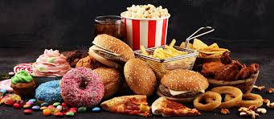
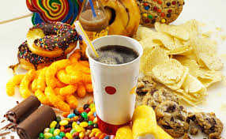

CONHECENDO OS ALIMENTOS: DO NATURAL AOS INDUSTRIALIZADOS
ALIMENTOS ULTRA PROCESSADOS Os alimentos ultraprocessados são produtos feitos pela indústria com muitos ingredientes artificiais e pouca quantidade de alimentos naturais. Eles passam por várias etapas de fabricação e costumam conter substâncias químicas para melhorar o sabor, a cor, o cheiro e aumentar o tempo de conservação. Entre os ingredientes artificiais mais encontrados nos alimentos ultraprocessados estão corantes, conservantes, aromatizantes, adoçantes artificiais, gordura hidrogenada e excesso de açúcar e sódio. Alguns exemplos de alimentos ultraprocessados são: 1. Refrigerante 2. Salgadinho de pacote 3. Biscoito recheado 4. Macarrão instantâneo 5. Nuggets de frango O consumo excessivo desses alimentos pode causar vários problemas de saúde, como obesidade, diabetes, pressão alta e doenças do coração. Além disso, os ultraprocessados possuem poucos nutrientes importantes para o corpo e podem prejudicar a qualidade da alimentação. Por isso, é recomendado consumir mais alimentos in natura e evitar o excesso de produtos ultraprocessados.

